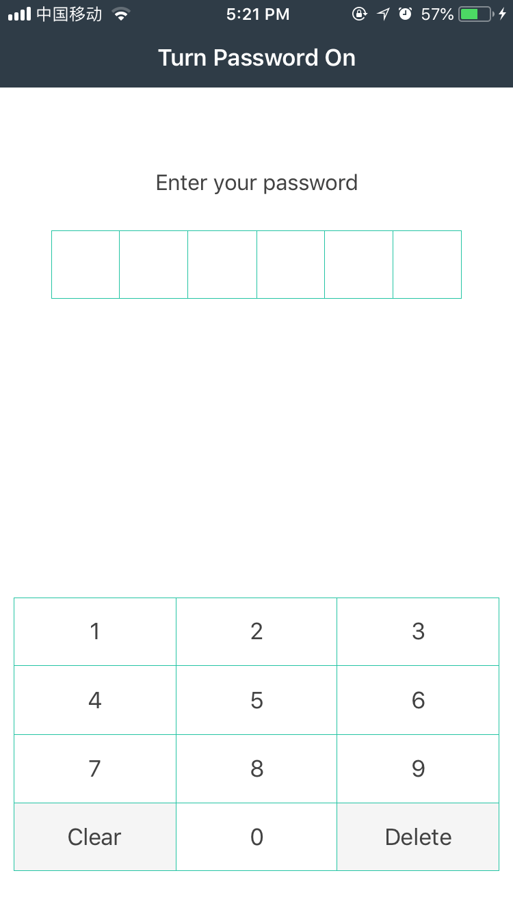
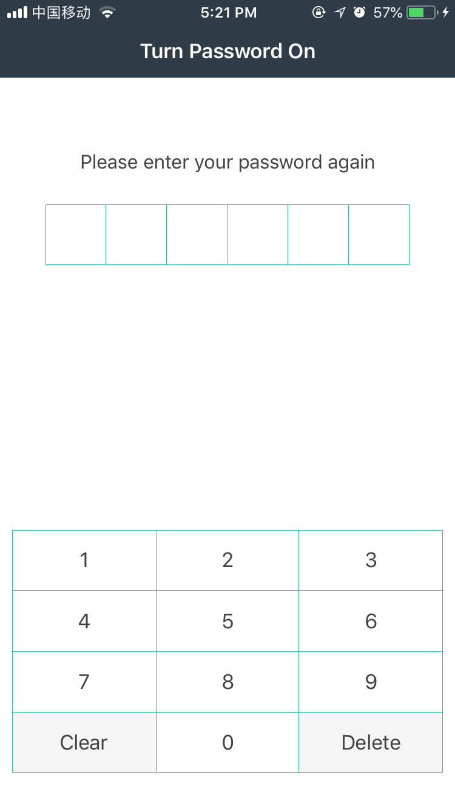
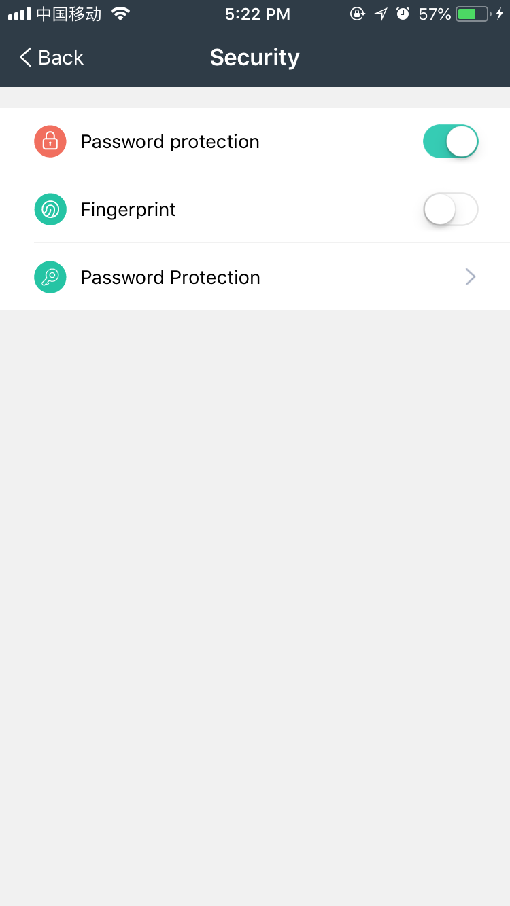
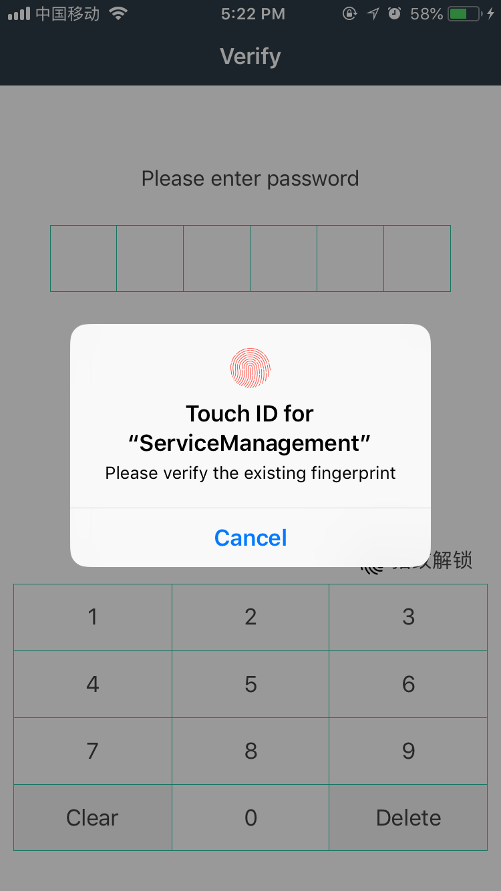

Use app Password Protection
1
. Set the app password.
For security purposes, set the app access password when you use it for the first time. When you access the app again or upon timeout, the password is required.


2
. Disable password protection.
Procedure: On "My"->"Security Settings", set "Password Protection" to off.

3
. Fingerprint
If password protection is enabled, you can set fingerprint (disabled by default).
Procedure: On "My"->"Security Settings", set Fingerprint to on.
If fingerprint is enabled, fingerprint authentication is preferred when you access the app again.

4
. Change password
If password protection is enabled, you can change the password as required.
Procedure: On "My"->"Security Settings", touch Change Password.